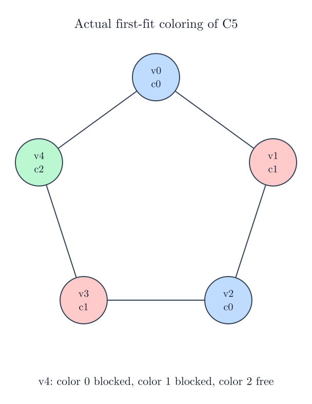
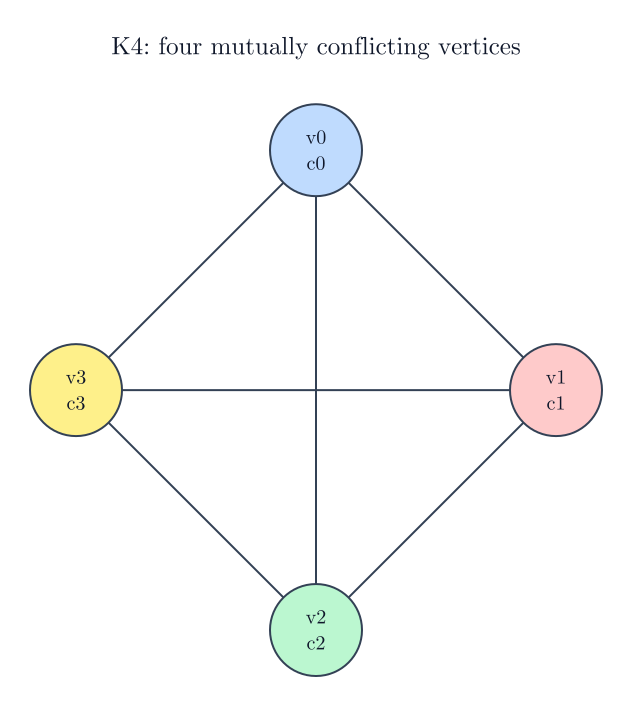
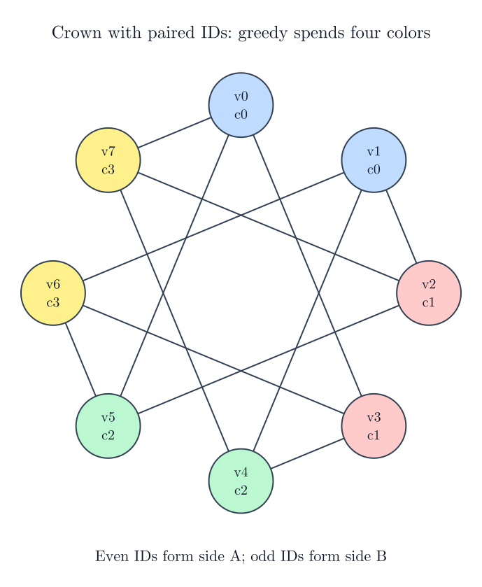
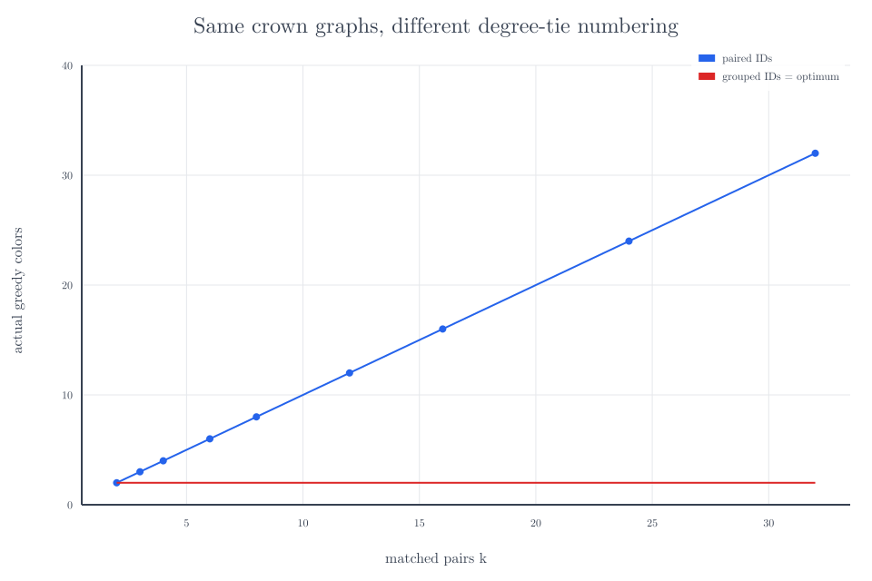
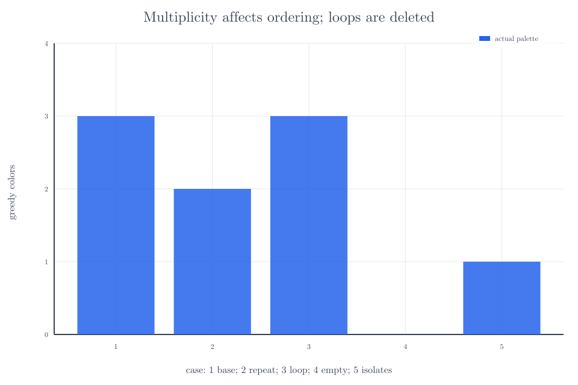

Graph coloring: first fit is feasible, not necessarily few
Abstract
Given pairwise conflicts, assign a label to every vertex so conflicting vertices receive different labels. Fewer labels can mean fewer time slots or interchangeable resources, but a valid assignment need not minimize that count. Degree-ordered first fit chooses the smallest unblocked color at each vertex. This report follows actual native decisions on the original five-cycle and complete four-vertex graph, proves the degree bound, and constructs bipartite crown graphs where deterministic tie order spends arbitrarily many colors despite a two-color witness. Explicit multigraph, loop-deletion and verifier controls state precisely which constraints the implementation solves.
Watch the last vertex of the five-cycle
The original cycle \(C_5\) has edges 0–1–2–3–4–0. Every degree is two, so descending degree with ascending-ID ties visits 0,1,2,3,4. The first four vertices alternate colors zero and one. The final vertex sees both colors and must choose two. The table records the actual producing assignments and the final availability probes, including the first free slot.
#include <dm/dm.hpp>
int main() {
std::filesystem::create_directories("build");
const auto g = dm::algorithms::coloring_cycle(5);
const auto t = dm::algorithms::greedy_coloring_trace(g.vertices, g.edges);
const auto &a = t.analysis;
std::print("| visit | vertex | multigraph degree | assigned color |\n| ---: | ---: | ---: | ---: |\n");
for (std::size_t i = 0; i < a.order.size(); ++i) {
const auto v = a.order[i];
std::print("| {} | {} | {} | {} |\n", i, v, a.degree[v],
a.result.color[v]);
}
std::print("\n| final vertex | tested color | blocked |\n| ---: | ---: | --- |\n");
for (const auto &e : t.events)
if (e.vertex == 4 && e.action == dm::algorithms::ColoringAction::probe)
std::print("| {} | {} | {} |\n", e.vertex, e.color, e.flag);
std::print("\nColors {}; projected graph proper {}; degree ceiling {}; neighbor visits {}; color probes " "{}; assignments {}.\n",
a.result.num_colors,
dm::algorithms::is_proper_coloring(g.vertices, g.edges,
a.result.color),
a.work.max_degree + 1, a.work.neighbor_visits,
a.work.color_probes, a.work.assignments);
dm::graphics::Diagram d =
dm::algorithms::coloring_diagram(g, a.result,
"Actual first-fit coloring of C5");
d.text({0, -4.4}, "v4: color 0 blocked, color 1 blocked, color 2 free", 22).save_svg("build/coloring_cycle.svg");
if (a.result.color != std::vector<std::size_t>{0, 1, 0, 1, 2})
throw std::runtime_error("original cycle");
}| visit | vertex | multigraph degree | assigned color |
|---|---|---|---|
| 0 | 0 | 2 | 0 |
| 1 | 1 | 2 | 1 |
| 2 | 2 | 2 | 0 |
| 3 | 3 | 2 | 1 |
| 4 | 4 | 2 | 2 |
| final vertex | tested color | blocked |
|---|---|---|
| 4 | 0 | true |
| 4 | 1 | true |
| 4 | 2 | false |
Colors 3; projected graph proper true; degree ceiling 3; neighbor visits 10; color probes 9; assignments 5.

Define the graph being solved
For a loopless undirected graph \(G=(V,E)\), a proper coloring maps vertices to nonnegative integer labels with \(c(u)\ne c(v)\) on every edge. The chromatic number \(\chi(G)\) is the smallest possible number of distinct labels. Empty graphs have \(\chi=0\); a nonempty edgeless graph has \(\chi=1\). A bipartite graph with at least one edge has \(\chi=2\). Without that last condition, “every bipartite graph needs two colors” is false.
The legacy API deletes self-loops after validating their endpoints. A graph containing a loop has no proper coloring under the mathematical definition, but its loop-deleted projection may have one. Every properness claim below concerns that projected graph. Parallel records remain in adjacency lists and count towards ordering degrees. They add no new unequal-label constraint, yet can change the heuristic's order and palette size.
The result owns one label per vertex and a contiguous palette from zero.
is_proper_coloring checks vector length, endpoint validity and nonloop
inequalities. It accepts arbitrary size_t labels, including gaps; it certifies
neither a claimed palette count nor minimality. Its loop-deletion policy matches
the solver, so it does not certify the original looped graph.
Derive first fit and the degree bound
First prepare undirected adjacency lists. Sort vertices by decreasing adjacency length, then increasing ID. For a current vertex v, initialize degree(v)+1 false markers, scan every adjacent entry, and mark any already-colored neighbor label that fits the marker array. Choose the smallest unmarked slot. A neighbor label above that array cannot equal a chosen slot, so skipping such a marker is safe.
Properness follows by considering the later endpoint of each nonloop edge: it sees the earlier endpoint's color and avoids it, either through a blocked marker or because that label is above its possible palette. At most degree(v) distinct colors can be blocked by its neighbors. Among degree(v)+1 slots at least one is free, giving
The stronger statement replaces multiplicity degree by the number of distinct adjacent vertices in the counting argument. Multiplicity remains relevant to the implemented order and work. The palette is contiguous: introducing label k requires labels 0 through k−1 already to block a vertex. A degree ceiling is an upper bound on this feasible result, not a proof that it equals \(\chi\).
For a nonempty graph, let \(d_i\) be the degree of the i-th visited vertex, counting positions from one. At most i−1 earlier vertices can block distinct colors, so the degree-sequence form of the bound is
This upper bound still need not be sharp: a regular crown gives the same degree-sequence ceiling under either numbering, while the actual palettes can differ.
The five-cycle needs three colors because alternating two labels around an odd cycle clashes at closure. The clique \(K_4\) needs four because every vertex pair conflicts. These lower bounds, paired with the native feasible colorings, establish optimality for these particular examples.
#include <dm/dm.hpp>
int main() {
std::filesystem::create_directories("build");
const auto g = dm::algorithms::coloring_complete(4);
const auto a = dm::algorithms::greedy_coloring_analyze(g.vertices, g.edges);
std::print("| vertex | degree | actual color |\n| ---: | ---: | ---: |\n");
for (auto v : a.order)
std::print("| {} | {} | {} |\n", v, a.degree[v], a.result.color[v]);
std::print("\nK4 uses {}; maximum degree plus one {}; proper {}; each pair is adjacent, so four is also " "a lower bound.\n",
a.result.num_colors, a.work.max_degree + 1,
dm::algorithms::is_proper_coloring(g.vertices, g.edges,
a.result.color));
dm::graphics::Diagram d =
dm::algorithms::coloring_diagram(g, a.result,
"K4: four mutually conflicting vertices");
d.save_svg("build/coloring_clique.svg");
if (a.result.num_colors != 4)
throw std::runtime_error("original clique");
}| vertex | degree | actual color |
|---|---|---|
| 0 | 3 | 0 |
| 1 | 3 | 1 |
| 2 | 3 | 2 |
| 3 | 3 | 3 |
K4 uses 4; maximum degree plus one 4; proper true; each pair is adjacent, so four is also a lower bound.

A bipartite graph where tie order wastes colors
Take two sides \(A=\{a_0,\ldots,a_{k-1}\}\) and \(B=\{b_0,\ldots,b_{k-1}\}\). Join \(a_i\) to every \(b_j\) except \(b_i\). This crown graph has 2k vertices, k(k−1) edges and degree k−1 everywhere. For k≥2 it has an edge and an explicit proper two-coloring: all A vertices zero, all B vertices one. Thus \(\chi=2\).
Give IDs in paired order \(a_0,b_0,a_1,b_1,\ldots\). Degree ties retain this sequence. Inductively, both vertices of pair i see colors 0 through i−1 on previous opposite-side vertices, but they do not conflict with one another. Both take color i. The native palette therefore has k colors, matching the degree ceiling while wasting a factor k/2 over the optimum.
Grouped IDs \(a_0,\ldots,a_{k-1},b_0,\ldots,b_{k-1}\) give the same abstract graph a different tie order. First fit then uses two colors. This is a relabeling effect, not a new optimization algorithm or an empirical average-case result.
#include <dm/dm.hpp>
int main() {
std::filesystem::create_directories("build");
const auto g = dm::algorithms::coloring_crown(4, true);
const auto a = dm::algorithms::greedy_coloring_analyze(g.vertices, g.edges);
const auto witness = dm::algorithms::coloring_crown_witness(4, true);
std::print("| vertex | greedy label | explicit bipartition label |\n| ---: | ---: | ---: |\n");
for (std::size_t v = 0; v < g.vertices; ++v)
std::print("| {} | {} | {} |\n", v, a.result.color[v], witness.color[v]);
const auto grouped = dm::algorithms::coloring_crown(4, false);
const auto other =
dm::algorithms::greedy_coloring(grouped.vertices, grouped.edges);
const bool feasible =
dm::algorithms::is_proper_coloring(g.vertices, g.edges, witness.color);
std::print("\nPaired-ID greedy {}; grouped-ID greedy {}; two-color witness proper {}; nonempty " "bipartite graph has exact optimum 2.\n",
a.result.num_colors, other.num_colors, feasible);
dm::graphics::Diagram d =
dm::algorithms::coloring_diagram(g, a.result,
"Crown with paired IDs: greedy spends four colors");
d.text({0, -4.7}, "Even IDs form side A; odd IDs form side B", 22).save_svg(
"build/coloring_crown.svg");
if (a.result.num_colors != 4 || other.num_colors != 2 || !feasible)
throw std::runtime_error("crown witness");
}| vertex | greedy label | explicit bipartition label |
|---|---|---|
| 0 | 0 | 0 |
| 1 | 0 | 1 |
| 2 | 1 | 0 |
| 3 | 1 | 1 |
| 4 | 2 | 0 |
| 5 | 2 | 1 |
| 6 | 3 | 0 |
| 7 | 3 | 1 |
Paired-ID greedy 4; grouped-ID greedy 2; two-color witness proper true; nonempty bipartite graph has exact optimum 2.

Count actual work and trace records
Let n be vertices and m the nonloop edge records, counting duplicates. The adjacency list contains 2m entries and the sweep visits every entry once. Initializing degree(v)+1 availability slots at every vertex totals n+2m slots. Each chosen color c(v) takes c(v)+1 marker reads, including the free one:
Here H counts actual neighbor, probe and assignment records. Marker writes may repeat the same slot for parallel edges; every actual write is counted. Sorting adds O(n log n) comparisons, and original edge validation/preparation visits loops too. Overall work is O(n log n+original edge records), with O(n+m) working/output storage and O(n+m) optional trace. These are logical counts, not timing, allocator or machine-instruction measurements.
For the paired crown, colors i occur twice for i=0,...,k−1, so P=k(k+1) and H=3k²+k. Grouped IDs give P=3k and H=2k²+3k. Both graphs have the same edge count. The next sweep checks these formulas against actual native records; only the palette is plotted.
#include <dm/dm.hpp>
int main() {
std::filesystem::create_directories("build");
std::print("| pairs k | vertices | edge records | paired palette | grouped palette | paired probes | " "grouped probes | paired history |\n| ---: | ---: | ---: | ---: | ---: | ---: | ---: | ---: " "|\n");
std::vector<double> x, paired, grouped;
for (std::size_t k : {2, 3, 4, 6, 8, 12, 16, 24, 32}) {
const auto p =
dm::algorithms::coloring_crown(k, true), g =
dm::algorithms::coloring_crown(k, false);
const auto a =
dm::algorithms::greedy_coloring_trace(p.vertices, p.edges), b =
dm::algorithms::greedy_coloring_trace(g.vertices, g.edges);
const auto &u = a.analysis.work;
const auto &v = b.analysis.work;
if (a.analysis.result.num_colors != k ||
b.analysis.result.num_colors != 2 ||
u.neighbor_visits != 2 * k * (k - 1) ||
u.marker_slots != 2 * k * k || u.color_probes != k * (k + 1) ||
v.color_probes != 3 * k || a.events.size() != 3 * k * k + k ||
b.events.size() != 2 * k * k + 3 * k)
throw std::runtime_error("crown counts");
std::print("| {} | {} | {} | {} | {} | {} | {} | {} |\n", k, p.vertices,
p.edges.size(), a.analysis.result.num_colors,
b.analysis.result.num_colors, u.color_probes, v.color_probes,
a.events.size());
x.push_back(k);
paired.push_back(a.analysis.result.num_colors);
grouped.push_back(b.analysis.result.num_colors);
}
auto plot = dm::graphics::RPlot::create();
plot.line(x, paired, "paired IDs", {37, 99, 235}, 2).points(x, paired, "",
{37, 99, 235}, 4).line(x, grouped, "grouped IDs = optimum", {220, 38, 38}, 2).title("Same crown graphs, different degree-tie numbering").x_label("matched pairs k").y_label("actual greedy colors").y_limits(0, 40).save_svg("build/coloring_scaling.svg");
}| pairs k | vertices | edge records | paired palette | grouped palette | paired probes | grouped probes | paired history |
|---|---|---|---|---|---|---|---|
| 2 | 4 | 2 | 2 | 2 | 6 | 6 | 14 |
| 3 | 6 | 6 | 3 | 2 | 12 | 9 | 30 |
| 4 | 8 | 12 | 4 | 2 | 20 | 12 | 52 |
| 6 | 12 | 30 | 6 | 2 | 42 | 18 | 114 |
| 8 | 16 | 56 | 8 | 2 | 72 | 24 | 200 |
| 12 | 24 | 132 | 12 | 2 | 156 | 36 | 444 |
| 16 | 32 | 240 | 16 | 2 | 272 | 48 | 784 |
| 24 | 48 | 552 | 24 | 2 | 600 | 72 | 1752 |
| 32 | 64 | 992 | 32 | 2 | 1056 | 96 | 3104 |

Test representation policy and failure boundaries
The next control repeats two existing crown edges. There are no new adjacency constraints, but the multiplicity degree ordering changes and the palette falls from three to two. Adding a valid self-loop instead leaves the projected solution unchanged. This preserves the library's historical behavior while making its graph model explicit.
#include <dm/dm.hpp>
int main() {
std::filesystem::create_directories("build");
const auto base = dm::algorithms::coloring_crown(3);
auto duplicate = base;
duplicate.edges.push_back({0, 3});
duplicate.edges.push_back({2, 5});
auto loop = base;
loop.edges.push_back({0, 0});
const std::vector<dm::algorithms::ColoringGraph> graphs{base, duplicate,
loop, {0, {}},
{3, {}}};
const std::vector<std::string> names{"base crown", "repeated edges",
"added loop", "empty", "three isolates"};
std::vector<double> x, colors;
std::print("| case | edge records | ignored loops | palette | order |\n| --- | ---: | ---: | ---: | --- " "|\n");
for (std::size_t i = 0; i < graphs.size(); ++i) {
const auto &g = graphs[i];
const auto a =
dm::algorithms::greedy_coloring_analyze(g.vertices, g.edges);
std::string order;
for (auto v : a.order) {
if (!order.empty())
order += ",";
order += std::to_string(v);
}
std::print("| {}: {} | {} | {} | {} | {} |\n", i + 1, names[i],
g.edges.size(), a.work.ignored_loops, a.result.num_colors,
order.empty() ? "none" : order);
x.push_back(i + 1);
colors.push_back(a.result.num_colors);
}
const auto t =
dm::algorithms::greedy_coloring_trace(base.vertices, base.edges);
bool quota = false, invalid = false;
try {
(void) dm::algorithms::greedy_coloring_trace(base.vertices, base.edges,
{6, 6, t.events.size() - 1});
} catch (const std::length_error &) {
quota = true;
}
try {
(void) dm::algorithms::greedy_coloring_trace(6, {{6, 6}}, {1, 1, 1});
} catch (const std::invalid_argument &) {
invalid = true;
}
auto copy = t;
copy.events[0].vertex = 99;
std::print("\nOne-short actual-event cap rejects: {}; invalid loop endpoint rejected before caps: {}; " "copied events independent: {}; arbitrary gapped labels accepted: {}; loop-deleted singleton " "accepted: {}.\n",
quota, invalid, t.events[0].vertex != copy.events[0].vertex,
dm::algorithms::is_proper_coloring(2, {{0, 1}}, {7, 99}),
dm::algorithms::is_proper_coloring(1, {{0, 0}}, {7}));
auto plot = dm::graphics::RPlot::create();
plot.bars(x, colors, "actual palette", {37, 99, 235}).title(
"Multiplicity affects ordering; loops are deleted").x_label(
"case: 1 base; 2 repeat; 3 loop; 4 empty; 5 isolates").y_label(
"greedy colors").y_limits(0, 4).save_svg("build/coloring_controls.svg");
if (colors != std::vector<double>{3, 2, 3, 0, 1} || !quota || !invalid)
throw std::runtime_error("representation controls");
}| case | edge records | ignored loops | palette | order |
|---|---|---|---|---|
| 1: base crown | 6 | 0 | 3 | 0,1,2,3,4,5 |
| 2: repeated edges | 8 | 0 | 2 | 0,2,3,5,1,4 |
| 3: added loop | 7 | 1 | 3 | 0,1,2,3,4,5 |
| 4: empty | 0 | 0 | 0 | none |
| 5: three isolates | 0 | 0 | 1 | 0,1,2 |
One-short actual-event cap rejects: true; invalid loop endpoint rejected before caps: true; copied events independent: true; arbitrary gapped labels accepted: true; loop-deleted singleton accepted: true.

The analysis APIs cap complete vertices and original edge records at one million each by default, including isolates, loops and duplicates; zero disables either cap. Full endpoint validation precedes those caps and adjacency allocation. The legacy API has no optional policy caps. Capture additionally admits each actual whole event online, default one million; zero disables that cap. Preparation, ordinary result/work, capacities and allocation overhead are excluded, so these are neither byte nor peak-memory limits. Exceeding a cap throws without returning a partial trace. Analysis without capture ignores the event cap.
Owned preparation, result labels and events survive input mutation and independent copies. The verifier returns false on wrong shape or invalid endpoints; it does not throw for an ordinary invalid candidate. Independent calls share no mutable state, while concurrent mutation of borrowed input remains outside the contract.
What the examples support
Properness is a feasibility guarantee for a stated graph model. Optimality additionally needs a lower bound matching the palette, as with an odd cycle, clique or explicit two-color crown witness. Degree ordering is deterministic and cheap, but even regular bipartite graphs expose unbounded waste from ID ties. Parallel records affect both selected work and ordering. Synthetic graphs are appropriate here because they isolate these mechanisms; no unrelated dataset or real scheduling-performance claim is needed.
D. J. A. Welsh and M. B. Powell, [An upper bound for the chromatic number of a graph and its application to timetabling problems](https://doi.org/10.1093/comjnl/10.1.85), The Computer Journal 10(1), 85–86 (1967), is the primary source for degree-ordered coloring and its scheduling motivation. Ascending-ID ties, preserved parallel entries, loop deletion and the event format are this library's explicit software policy. Scheduling applications need their own conflict model; an undirected edge does not encode capacities, durations or every real timetable constraint.
Verification compares all six-vertex simple graphs and seeded multigraphs with a frozen original implementation, reconstructs actual events and work, and uses independent exact-color searches on small graphs. Quota, malformed-endpoint, loop, empty/isolate, ownership and family-size cases run with sanitizers. All complete programs, figures, documentation examples and both exports are checked before the legacy sources are retired.